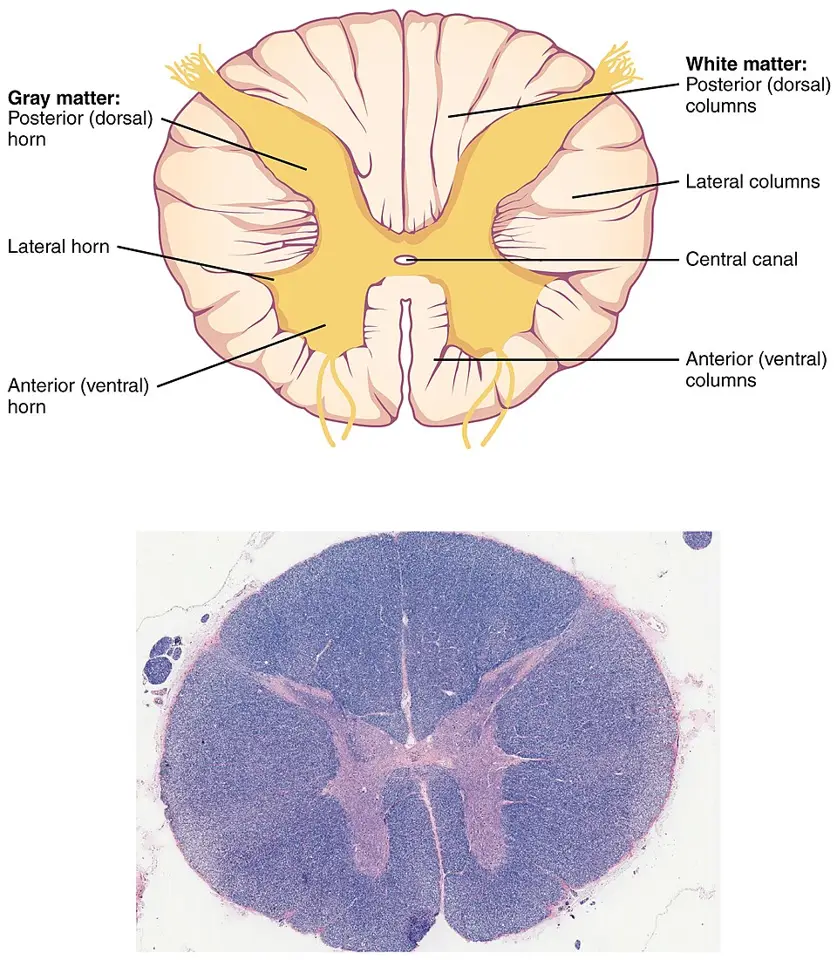

DX.3 — Myélopathie cervicale dégénérative 🚩 E6
La myélopathie cervicale dégénérative résulte d’une compression lente de la moelle par l’usure du rachis et s’aggrave souvent sans traitementS2S5. Le médecin la cherche par un examen neurologique complet, la confirme par l’imagerie par résonance magnétique (IRM) et classe sa gravité par le score mJOAS5S6. La chirurgie est recommandée dès la forme modérée, car elle arrête la progression et permet une récupération partielleS5S6.
Ce cours DX.3 reprend les sources citées ; aucun médecin ne l’a encore validé cliniquement.
1. Définition
La myélopathie cervicale se définit comme une maladie de la moelle épinière à l’étage cervical, révélée par des symptômes et des signes d’atteinte des voies ascendantes et descendantesS1. Elle devient dégénérative lorsque le rétrécissement du canal, causé par l’usure physiologique du rachis cervical, comprime la moelleS2.
2. Épidémiologie (Suisse, puis Europe)
La fréquence nationale de la myélopathie cervicale dégénérative reste inconnue, car aucune source suisse lue ne la chiffre. La recommandation de la fondation AO (Arbeitsgemeinschaft für Osteosynthesefragen) Spine la tient pour la première cause de dysfonction médullaire de l’adulteS5. Au Royaume-Uni, la prévalence des formes opérées atteint 1,6 pour 100 000 habitants, chiffre que les auteurs jugent très inférieur à la prévalence réelleS6. Le diagnostic tombe le plus souvent dans la cinquième décennie, tandis que la maladie reste rare avant 40 ansS6. Elle occupe donc le troisième rang de fréquence du lot dans la Phase A, derrière la cervicalgie commune et la radiculopathie. Les chiffres disponibles et le retard diagnostique mesuré en Europe complètent ces repères.
Chiffres utiles : Suisse, puis Europe et ailleurs
| Donnée | Valeur | Lieu, période | Source |
|---|---|---|---|
| Fréquence en Suisse | Non chiffrée dans les sources suisses lues | Genève, 2012 et 2015 | S1S2 |
| Rang parmi les causes de dysfonction médullaire | Première cause chez l’adulte | Monde, recommandation de 2017 | S5 |
| Prévalence des myélopathies opérées | 1,6 pour 100 000 habitants | Royaume-Uni, revue de 2018 | S6 |
| Âge au diagnostic | Surtout la cinquième décennie ; rare avant 40 ans | Royaume-Uni, 2018 | S6 |
| Compression médullaire fortuite à l’IRM (imagerie par résonance magnétique) | De 31,6 % dans la cinquième décennie à 66,8 % dans la huitième | Volontaires sains de 40 à 80 ans | S6 |
| Patients non diagnostiqués porteurs de signes évocateurs | 18 % | Série citée par la revue britannique | S6 |
| Disques C5-C6 et C6-C7 | Plus de 90 % des discopathies cervicales symptomatiques | Genève, 2015 | S1 |
La compression vue à l’IRM devient banale avec l’âge, si bien qu’une image seule ne prouve jamais la maladieS6. Cette dissociation entre image et clinique explique pourquoi la prévalence réelle reste inconnue, ce que les auteurs britanniques admettentS6.
Retard diagnostique et erreurs fréquentes
| Mesure | Valeur | Conséquence pratique | Source |
|---|---|---|---|
| Délai entre premier symptôme et diagnostic | 2,2 ans en moyenne, de 1,7 mois à 8,9 ans | Le déficit s’installe pendant l’attente | S6 |
| Consultations avant le diagnostic | 5,2 ± 3,6 en moyenne | Chaque consultation manquée prolonge la compression | S6 |
| Diagnostic erroné le plus courant | Syndrome du canal carpien, surtout bilatéral | Toute atteinte bilatérale des mains impose de penser à la moelle | S6S7 |
| Cause du retard en première ligne | Méconnaissance de la maladie par les médecins de famille | L’examen neurologique complet corrige ce biais | S6S7 |
La revue britannique retient qu’un traitement dans les six mois suivant les symptômes offre la meilleure chance de récupération, ce qui rend ce retard coûteuxS6.
3. Physiopathologie
La dégénérescence discale, l’arthrose et l’épaississement des structures ligamentaires rétrécissent le canal et réduisent l’espace disponible pour la moelleS1S2. Le déficit varie selon la localisation, la vitesse de la compression et la réserve vasculaire disponible, ce qui explique des tableaux très différents à image égaleS1. Les cordons postérieurs souffrent d’abord, d’où la perte de la sensibilité vibratoire puis les troubles de la marche et de l’équilibreS2. La coupe de moelle annotée relie chaque voie à son signe, et les facteurs de progression précisent le risque évolutif.
Voies médullaires et signes cliniques
Coupe transversale de la moelle épinière. OpenStax représente en couleurs la substance grise en papillon et les cordons de substance blanche que la compression atteintS8.

Le lecteur doit d’abord repérer seul les cordons postérieurs, latéraux et antérieurs, puis la corne antérieure, avant de comparer avec la copie annotée.
- Les cordons postérieurs portent la sensibilité vibratoire et proprioceptive ; leur atteinte précoce trouble la marche et l’équilibreS2S8.
- Les cordons latéraux contiennent la voie motrice descendante ; leur souffrance donne hyperréflexie, spasticité et signe de BabinskiS1S8.
- La corne antérieure abrite le motoneurone périphérique ; sa souffrance à l’étage comprimé peut affaiblir les muscles de la mainS1S8.
- Le canal central reste dans l’axe de la moelle ; sa dilatation évoque une syringomyélie, diagnostic différentiel à éliminerS1S8.
- Les cordons antérieurs complètent la substance blanche ; une compression étendue touche plusieurs cordons à la foisS5S8.
L’image histologique du bas montre la même architecture, ce qui aide à lire une coupe axiale d’IRM centrée sur la moelleS8.
| Voie ou structure | Signe attendu | Valeur clinique | Source |
|---|---|---|---|
| Cordons postérieurs | Hypopallesthésie, instabilité, signe de Lhermitte | Souvent précoce | S2S1 |
| Voie motrice descendante | Hyperréflexie, clonus, Babinski, spasticité | Signe d’atteinte centrale | S1S6 |
| Motoneurone périphérique à l’étage | Maladresse et faiblesse des mains | Confusion fréquente avec une neuropathie | S6S7 |
| Voies végétatives | Retard mictionnel, globe, incontinence, troubles de l’érection | Signe tardif et grave | S1S7 |
Facteurs de progression vers la myélopathie
| Facteur | Mesure | Interprétation | Source |
|---|---|---|---|
| Radiculopathie symptomatique associée | Prédicteur clinique significatif | Surveillance rapprochée de la compression | S5 |
| Hypersignal T2 (séquence pondérée en T2) intramédullaire | Risque relatif 1,7 (intervalle de confiance à 95 % de 1,0 à 2,7) | Prédit l’apparition de la myélopathie | S5 |
| Compression circonférentielle sur coupe axiale | Facteur de progression | Compression plus menaçante | S5 |
| Moelle à bord anguleux | Coin aigu sur un ou deux côtés | Facteur de progression | S5 |
| Grande amplitude de mobilité du cou | Facteur de progression | Microtraumatismes répétés | S5 |
| Instabilité segmentaire, glissement vertébral, faible lordose segmentaire | Facteurs de progression | Bilan dynamique utile | S5 |
| Colonne de liquide cérébrospinal réduite | Facteur de progression | Réserve canalaire faible | S5 |
La recommandation de 2017 rapporte que 8 % des sujets avec compression sans signe développent une myélopathie à 12 mois, puis 22,6 % après une médiane de 44 moisS5. Elle mesure aussi un taux de lésion médullaire de 13,9 pour 1000 personnes-années chez les porteurs de myélopathie spondylotique, ce qui justifie la prudence après une chuteS5.
4. Démarche diagnostique
Le médecin doit évoquer la myélopathie devant toute douleur ou raideur du cou associée à une maladresse des mains, une instabilité ou des chutes après 50 ansS6. Il examine ensuite les quatre membres à la recherche de signes centraux, puis il demande une IRM cervicale lorsque l’examen ou l’anamnèse oriente vers la moelleS6S7. La confirmation exige la concordance entre la clinique et la compression vue à l’IRM, car l’image seule ne suffit pasS1S6. Les étapes chiffrées de la démarche et le niveau d’urgence structurent cette décision.
Étapes de la démarche, du soupçon à l’orientation
| Étape | Action | Seuil ou critère | Conduite | Source |
|---|---|---|---|---|
| 1. Soupçonner | Interroger sur mains, marche, chutes, sphincters | Plus de 50 ans, symptômes neurologiques qui s’aggravent | Examen neurologique complet | S6 |
| 2. Examiner | Réflexes, Hoffmann, Babinski, marche en tandem | Un signe central suffit à poursuivre | IRM cervicale | S7S6 |
| 3. Imager | IRM cervicale avec séquences T2 | Compression et signal médullaire | Corréler à la clinique | S7S1 |
| 4. Graduer | Score modifié de la Japanese Orthopaedic Association (JOA) | mJOA 15 à 17, 12 à 14, 11 ou moins | Choisir l’orientation | S5 |
| 5. Orienter | Avis de chirurgie du rachis | Tout patient symptomatique | Chirurgie ou suivi structuré | S7S5 |
| 6. Surveiller | Réexamen et nouvelle mesure du score | Détérioration neurologique à l’examen ou au score mJOA | Chirurgie recommandée | S5 |
Degré d’urgence selon le tableau
| Situation | Délai | Lieu | Source |
|---|---|---|---|
| Déficit neurologique marqué ou aggravation rapide | Immédiat | IRM et avis de chirurgie du rachis, ou urgences | S7 |
| Signes centraux stables, gêne fonctionnelle | Rapide | IRM urgente puis consultation de chirurgie du rachis | S7S6 |
| Myélopathie légère stable | Programmé | Avis spécialisé, même si le traitement reste conservateur | S7S5 |
| Compression sans aucun signe | Sans urgence | Information sur les signes d’alerte et suivi | S5S6 |
La revue canadienne demande un transfert aux urgences lorsque le déficit est important, car la moelle peut alors basculer vers la paralysieS7S1.
5. Anamnèse ciblée et drapeaux rouges
La paresthésie des membres constitue souvent le premier signe, mais la maladresse fine, comme boutonner une chemise ou écrire, oriente davantage vers la moelleS7. Le médecin recherche des chutes répétées, une instabilité, un retard au démarrage de la miction et des troubles de l’érection, que l’équipe genevoise range parmi les symptômesS1. Une douleur centrale sourde, brûlante, profonde et diffuse peut toucher le cou ou les membres supérieursS1. Les questions ciblées, les drapeaux rouges, les éléments du terrain et la chronologie des symptômes guident l’interrogatoire.
Questions ciblées et réponses qui orientent
| Question | Réponse évocatrice | Hypothèse | Source |
|---|---|---|---|
| Vos mains sont-elles devenues maladroites ? | Boutons difficiles, écriture modifiée, objets qui tombent | Atteinte centrale des mains | S7S6 |
| Les fourmillements touchent-ils les deux mains ? | Paresthésies bilatérales sans territoire | Moelle plutôt que double canal carpien | S7S6 |
| Marchez-vous moins sûrement ? | Instabilité, besoin de se tenir, chutes | Atteinte des cordons postérieurs | S2S6 |
| Une décharge parcourt-elle le dos quand vous fléchissez le cou ? | Décharge électrique descendante | Signe de Lhermitte | S1S6 |
| La miction a-t-elle changé ? | Démarrage difficile, urgence, fuite | Atteinte végétative | S1S6 |
| La gêne progresse-t-elle ? | Aggravation par paliers sur des mois | Évolution naturelle de la maladie | S5S2 |
Drapeaux rouges : hypothèse et conduite
| Drapeau rouge | Hypothèse | Conduite | Source |
|---|---|---|---|
| Déficit moteur qui s’installe en jours | Compression rapide, hernie, abcès, tumeur | IRM immédiate, avis de chirurgie | S7S1 |
| Incontinence ou atonie sphinctérienne | Atteinte médullaire avancée | Urgence chirurgicale | S1S7 |
| Fièvre, frissons, terrain immunodéprimé | Spondylodiscite (DX.8) | Hémocultures et IRM avec contraste | S4 |
| Traumatisme récent, même mineur | Lésion médullaire sur canal étroit | Immobilisation et imagerie | S5S4 |
| Antécédent de cancer, amaigrissement | Métastase ou tumeur rachidienne | IRM avec contraste | S4S1 |
| Polyarthrite rhumatoïde ancienne | Instabilité atlanto-axoïdienne (DX.10) | Radiographies dynamiques et IRM | S4 |
Chronologie habituelle des symptômes
| Stade | Symptômes | Mécanisme | Source |
|---|---|---|---|
| Début | Cervicalgie non spécifique, parfois douleur radiculaire | Rétrécissement canalaire encore peu compressif | S2 |
| Premiers signes médullaires | Paresthésies des membres, perte de la sensibilité vibratoire | Atteinte des cordons postérieurs | S7S2 |
| Retentissement fonctionnel | Maladresse des mains, marche instable, chutes | Atteinte combinée sensitive et motrice | S6S1 |
| Atteinte végétative débutante | Retard au démarrage de la miction, puis globe vésical | Voies végétatives médullaires | S1 |
| Stade tardif | Spasticité, incontinence fécale, atonie sphinctérienne | Souffrance médullaire avancée | S2S1 |
Les troubles sphinctériens restent rares et signent en général une atteinte médullaire déjà importante, ce qui impose de ne pas les attendreS7.
Terrain et antécédents utiles
| Élément | Pourquoi le chercher | Source |
|---|---|---|
| Âge supérieur à 50 ans | La maladie apparaît surtout dans la cinquième décennie | S6 |
| Radiculopathie cervicale connue | Elle augmente le risque de myélopathie en cas de compression | S5 |
| Activités à fort impact cervical | Sports de contact et parachutisme sont à éviter | S7 |
| Diagnostic antérieur de canal carpien | Erreur fréquente chez les patients finalement myélopathes | S6 |
| Tabagisme et comorbidités | Ils assombrissent le résultat chirurgical | S7 |
6. Examen physique ciblé, région par région
L’examen cherche des signes d’atteinte centrale aux quatre membres, car leur spécificité reste élevée malgré une sensibilité faibleS6. Le médecin examine chaque région dans un ordre fixe : cou, membres supérieurs, membres inférieurs, marche, puis fonctions périnéales. Chaque région a sa fenêtre : cou, membres supérieurs, membres inférieurs, marche et équilibre, périnée et score fonctionnel.
Cou et rachis cervical
| Geste | Anomalie | Interprétation | Source |
|---|---|---|---|
| Mobilité active | Raideur, douleur, limitation | Fréquente et peu spécifique | S6S4 |
| Flexion du cou | Décharge électrique dans le dos ou les membres | Signe de Lhermitte, atteinte des cordons postérieurs | S1S6 |
| Extension et rotation, manœuvre de Spurling | Douleur radiculaire reproduite | Radiculopathie associée (DX.2) | S1S7 |
| Extension prolongée | Paresthésies des membres reproduites | Compression dynamique | S7 |
Le médecin ne manipule jamais ce cou, car la revue britannique contre-indique formellement la manipulation en cas de myélopathieS6.
Membres supérieurs
| Geste | Anomalie | Interprétation | Source |
|---|---|---|---|
| Signe de Hoffmann | Adduction et flexion du pouce après flexion forcée puis relâchement brusque de la dernière phalange d’un doigt | Atteinte de la voie motrice | S6S7 |
| Réflexes ostéotendineux | Vifs, diffusés, clonus | Hyperréflexie centrale | S1S7 |
| Tonus | Augmenté, spasticité | Atteinte centrale | S1 |
| Signe de Wartenberg | Abduction persistante du cinquième doigt | Faiblesse intrinsèque de la main | S7 |
| Force par myotome | Faiblesse d’un groupe | Racine associée ou corne antérieure | S7S1 |
| Sensibilité | Diminution généralisée, sans territoire | Moelle plutôt que nerf périphérique | S1 |
Membres inférieurs
| Geste | Anomalie | Interprétation | Source |
|---|---|---|---|
| Réflexe cutané plantaire | Extension du gros orteil | Signe de Babinski, voie motrice | S1S6 |
| Réflexes rotuliens et achilléens | Vifs, clonus de la cheville | Hyperréflexie centrale | S7 |
| Tonus | Hypertonie des membres inférieurs | Spasticité | S1 |
| Sensibilité vibratoire | Hypopallesthésie | Cordons postérieurs | S2 |
| Force | Faiblesse ou raideur des jambes | Atteinte motrice centrale | S6 |
Marche et équilibre
| Épreuve | Anomalie | Interprétation | Source |
|---|---|---|---|
| Observation de la marche | Polygone de sustentation élargi | Ataxie médullaire | S1 |
| Marche en tandem | Pas latéraux, rattrapages | Trouble proprioceptif | S7 |
| Test de marche de 30 mètres | Temps allongé, nombre de pas accru | Mesure répétable de la gêne | S7 |
| Anamnèse des chutes | Chutes répétées | Atteinte avancée | S1S6 |
Une marche instable avant l’opération prédit un moins bon résultat chirurgical, ce qui rend cette mesure utile au pronosticS7.
Périnée et fonctions sphinctériennes
| Recherche | Anomalie | Interprétation | Source |
|---|---|---|---|
| Anamnèse mictionnelle | Retard au démarrage, puis globe | Atteinte végétative débutante | S1 |
| Anamnèse digestive | Incontinence fécale | Stade tardif | S1 |
| Sensibilité périnéale | Paresthésie en selle | Signe tardif à ne pas attendre | S7 |
| Tonus anal | Diminué | Examen indiqué si trouble sphinctérien | S7 |
Score modifié de la JOA (mJOA)
| Domaine évalué | Contenu | Usage | Source |
|---|---|---|---|
| Membres supérieurs | Fonction motrice et sensitive | Mesure la gêne fine | S5 |
| Membres inférieurs | Fonction motrice et sensitive, marche | Mesure la gêne à la marche | S5 |
| Vessie | Fonction urinaire | Mesure l’atteinte végétative | S5 |
| Total sur 18 points | Légère 15 à 17 ; modérée 12 à 14 ; sévère 0 à 11 | Classe la gravité et oriente la chirurgie | S5 |
La recommandation de 2017 recommande la chirurgie dès une détérioration neurologique à l’examen ou au score, qui devient ainsi l’outil de suiviS5.
7. Approche syndromique
Le syndrome médullaire cervical associe des signes centraux aux quatre membres et des symptômes des mains, ce qui le sépare du syndrome radiculaire unilatéralS1S7. Une douleur faible n’écarte pas la myélopathie, car la maladresse peut précéder toute douleur notableS7. Le tableau syndromique permet de comparer la myélopathie aux autres diagnostics du lot et à ses principaux pièges.
Syndromes et diagnostics à distinguer
| Syndrome ou diagnostic | Argument pour | Argument contre la myélopathie | Source |
|---|---|---|---|
| Spondylodiscite (DX.8) | Fièvre, douleur d’effort, inflammation | Évolution plus rapide, syndrome infectieux | S4 |
| Instabilité rhumatoïde (DX.10) | Polyarthrite ancienne | Atteinte haute atlanto-axoïdienne | S4 |
| Radiculopathie (DX.2) | Douleur dans un territoire, Spurling positif | Pas d’hyperréflexie ni de Babinski | S1 |
| Cervicalgie commune (DX.1) | Douleur mécanique isolée | Examen neurologique normal | S4 |
| Canal carpien bilatéral | Paresthésies nocturnes des doigts | Hyperréflexie, signes aux jambes | S6S1 |
| Sclérose latérale amyotrophique (SLA) | Faiblesse avec signes centraux | Fasciculations diffuses, pas de trouble sensitif | S7 |
| Sclérose en plaques (SEP) | Signes centraux chez un sujet plus jeune | Lésions cérébrales à l’IRM | S7 |
| Syringomyélie | Malformation de Chiari associée | Cavité centromédullaire à l’IRM | S1 |
| Carence en vitamine B12 (cobalamine) | Atteinte des cordons postérieurs | Dosage vitaminique bas | S7 |
| Hydrocéphalie à pression normale | Marche instable, troubles urinaires | Troubles cognitifs, ventricules dilatés | S7 |
| Syndrome de Parsonage-Turner | Douleur intense de l’épaule puis amyotrophie | Pas de signe central | S1 |
8. Diagnostic positif et critères
Le diagnostic repose sur des signes cliniques de myélopathie concordant avec une compression médullaire cervicale à l’IRM, que l’équipe genevoise distingue de la myélopathie radiologiqueS1. La gravité se mesure ensuite par le score mJOA, qui sépare les formes légères, modérées et sévèresS5. Les critères du diagnostic positif et la classification de gravité figurent dans deux tableaux.
Critères du diagnostic positif
| Critère | Contenu | Ce qui ne suffit pas | Source |
|---|---|---|---|
| Clinique | Symptômes et signes d’atteinte médullaire | Une cervicalgie isolée | S1S6 |
| Image | Compression médullaire cervicale à l’IRM | Une compression sans aucun signe clinique | S5S6 |
| Concordance | Niveau et côté compatibles avec les signes | Une compression à un autre étage | S1 |
| Exclusion | Absence de maladie neurologique qui explique mieux le tableau | Un hypersignal T2 isolé | S7S1 |
La myélopathie radiologique rassemble le diamètre réduit, l’hypersignal T2, l’hyposignal T1 (séquence pondérée en T1) et la surface médullaire diminuéeS1.
Classification de gravité et conséquence
| Gravité | Score mJOA | Conséquence | Force de la recommandation | Source |
|---|---|---|---|---|
| Légère | 15 à 17 | Chirurgie ou rééducation structurée supervisée | Faible, preuves très faibles | S5 |
| Modérée | 12 à 14 | Chirurgie recommandée | Forte, preuves modérées | S5 |
| Sévère | 0 à 11 | Chirurgie recommandée | Forte, preuves modérées | S5 |
| Compression sans myélopathie ni radiculopathie | Non applicable | Pas de chirurgie prophylactique, information | Faible, avis d’experts | S5 |
| Compression avec radiculopathie, sans myélopathie | Non applicable | Chirurgie ou suivi rapproché ou rééducation | Faible, preuves faibles | S5 |
9. Examens complémentaires
L’IRM cervicale constitue l’examen de référence, et les séquences T2 offrent le meilleur contraste pour juger la moelleS7S6. La radiographie et le scanner ne montrent pas la moelle, mais ils renseignent sur l’alignement et la mobilité avant une chirurgieS7. Les tests électrophysiologiques servent surtout à exclure une neuropathie périphériqueS7S1. Le tableau des examens ciblés, la lecture de l’IRM et les examens d’exclusion précisent chaque indication.
Examens ciblés : indication, seuil, interprétation, conduite
| Examen | Indication | Résultat clé | Interprétation | Conduite | Source |
|---|---|---|---|---|---|
| IRM cervicale | Tout signe clinique de myélopathie | Compression, signal T2 de la moelle | Concordance avec la clinique | Avis de chirurgie du rachis | S7S6 |
| Radiographies de face, de profil et fonctionnelles | Plus de 50 ans, troubles neurologiques, symptômes au-delà de 6 semaines | Arthrose, alignement, instabilité | Ne prouvent pas la myélopathie | Planification chirurgicale | S4S7 |
| Scanner | Ossification ligamentaire, planification | Ostéophytes, ossification | Os mieux vu que la moelle | Selon le chirurgien | S7 |
| Électroneuromyogramme (ENMG) | Doute avec un canal carpien ou une neuropathie | Atteinte périphérique ou radiculaire | Rarement utile pour la moelle | Exclure un diagnostic concurrent | S7S4 |
| Potentiels évoqués somesthésiques (PES) | Doute sur une atteinte centrale | Conduction ralentie des fibres myélinisées | Atteinte des voies ascendantes | Appui au diagnostic | S1S7 |
| Potentiels évoqués moteurs (PEM) | Doute sur la voie motrice | Conduction centrale ralentie | Atteinte du premier motoneurone | Appui au diagnostic | S1 |
IRM : ce que le médecin lit
| Signe | Séquence | Sens | Piège | Source |
|---|---|---|---|---|
| Diamètre antéropostérieur réduit | Coupes sagittales et axiales | Compression | Fréquent chez le sujet âgé sain | S1S6 |
| Hypersignal intramédullaire | T2 | Souffrance médullaire | Prédicteur, pas preuve isolée | S1S5 |
| Hyposignal intramédullaire | T1 | Souffrance plus ancienne | Rare, à corréler | S1 |
| Surface médullaire réduite | Coupes axiales | Compression significative | Mesure variable | S1 |
| Compression circonférentielle, moelle anguleuse | Coupes axiales | Risque de progression | Pas toujours symptomatique | S5 |
L’étendue de la compression et le signal médullaire se corrèlent mal avec la sévérité, car une compression modeste peut causer une maladie graveS6.
Examens d’exclusion selon le contexte
| Examen | Situation | Diagnostic recherché | Source |
|---|---|---|---|
| Dosage de la vitamine B12 | Atteinte des cordons postérieurs prédominante | Carence vitaminique | S7 |
| IRM cérébrale | Signes centraux chez un sujet jeune | Sclérose en plaques, lésion intracrânienne | S7 |
| Protéine C réactive (CRP) | Douleur inflammatoire, fièvre | Spondylodiscite ou rhumatisme inflammatoire | S4 |
| ENMG des quatre membres | Fasciculations, amyotrophie diffuse | Sclérose latérale amyotrophique | S7 |
10. Arbre décisionnel
L’arbre part du soupçon clinique et aboutit à une orientation selon la gravité, l’évolution et la présence d’une compressionS5S6. L’arbre décisionnel en tableau se lit de haut en bas, une ligne par question.
Arbre décisionnel en tableau
| Question | Si oui | Si non | Source |
|---|---|---|---|
| Drapeau rouge : déficit rapide, sphincters, fièvre, traumatisme ? | IRM immédiate et avis chirurgical | Question suivante | S7S1 |
| Signes centraux aux membres ou maladresse bilatérale des mains ? | IRM cervicale | Autre cause de cervicalgie (DX.1, DX.2) | S6S7 |
| Compression concordante à l’IRM ? | Myélopathie dégénérative : mesurer le mJOA | Chercher une maladie neurologique concurrente | S5S7 |
| mJOA à 14 ou moins ? | Chirurgie recommandée | Forme légère : chirurgie ou rééducation supervisée | S5 |
| Forme légère qui s’aggrave ou ne s’améliore pas ? | Chirurgie | Poursuite du suivi | S5 |
| Compression sans aucun signe ? | Information et suivi, sans chirurgie | Non applicable | S5S6 |
11. Prise en charge selon les recommandations suisses
11.A But. Le traitement vise à arrêter la progression et à permettre une récupération réelle, quoique limitée, par la décompression de la moelleS6. L’équipe genevoise propose la chirurgie après un bilan étendu, afin de relâcher la moelle cervicale compriméeS3.
11.B Moyens. La chirurgie décompressive reste le seul traitement qui modifie l’évolution, tandis que les mesures conservatrices accompagnent seulement les formes légères stablesS5S6. Le traitement structuré, la chirurgie et les complications opératoires décrivent le geste opératoire. La prise en charge conservatrice, le choix partagé de la forme légère et le paracétamol de l’information professionnelle suisse (AIPS) complètent ces moyens.
11.C Surveillance. Le suivi répète l’examen neurologique et le score mJOA, puis il oriente vers la chirurgie dès une détérioration neurologiqueS5. Le calendrier de suivi précise les rendez-vous et les critères d’échec, et l’information du patient résume ce que le médecin explique.
11.D Pronostic. La récupération maximale survient vers 6 à 12 mois après la chirurgie, et les symptômes résiduels au-delà deviennent probablement définitifsS6. Le tableau pronostique réunit les facteurs favorables et défavorables.
Traitement structuré selon la gravité
| Situation | Moyen | Modalité | Délai et contrôle | Critère d’échec | Source |
|---|---|---|---|---|---|
| Myélopathie sévère, mJOA de 0 à 11 | Décompression chirurgicale | Voie choisie par le chirurgien | Sans attendre ; contrôle post-opératoire du score | Aggravation après l’opération | S5S6 |
| Myélopathie modérée, mJOA de 12 à 14 | Décompression chirurgicale | Après IRM et bilan | Idéalement dans les six mois suivant les symptômes | Perte de score en attente | S5S6 |
| Myélopathie légère, mJOA de 15 à 17 | Chirurgie ou rééducation structurée supervisée | Choix partagé avec le patient | Réexamen et score à chaque visite | Aggravation : chirurgie ; absence d’amélioration : chirurgie suggérée | S5 |
| Compression asymptomatique | Information sur le risque et les signes d’alerte | Pas de chirurgie prophylactique | Consulter au moindre symptôme nouveau | Apparition d’un signe central | S5S6 |
| Compression avec radiculopathie | Chirurgie ou suivi sériel rapproché ou rééducation | Risque accru de myélopathie expliqué | Suivi rapproché | Signe central nouveau | S5 |
| Douleur cervicale associée | Paracétamol, Dafalgan | Adulte de plus de 40 kg : 500 à 1000 mg par prise, au maximum 4000 mg par jourS9 | Intervalle de 4 à 8 heuresS9 | Douleur rebelle : réévaluer la compression | S9S6 |
Chirurgie : indication, principe, attentes
| Élément | Contenu | Source |
|---|---|---|
| Indication absolue | Myélopathie avancée corrélée au rétrécissement canalaire | S1 |
| Indication recommandée | Myélopathie modérée ou sévère, ou progressive | S5S6 |
| Principe | Décompression de la moelle, éventuellement fusion vertébrale | S3S1 |
| Planification | Imagerie de l’alignement et de la mobilité | S7 |
| Moment | Programmation selon le déficit fonctionnel et l’imagerie | S2 |
| Résultat attendu | Arrêt de la progression, récupération limitée | S6 |
La décision chirurgicale se prend en milieu spécialisé, où le bilan étendu précède l’intervention selon le service de neurochirurgie genevoisS3.
Complications de la chirurgie cervicale antérieure
| Complication | Fréquence | Signe à surveiller | Source |
|---|---|---|---|
| Ensemble des complications | 0,45 à 19,6 % | Tout symptôme nouveau | S1 |
| Mortalité | 0,1 % | Non applicable | S1 |
| Hématome post-opératoire | 0,2 à 5,6 % | Gonflement du cou, gêne respiratoire | S1 |
| Parésie du nerf laryngé récurrent | 0,05 à 7,1 % | Voix rauque | S1 |
| Dysphagie | 3,6 à 9,5 % | Gêne à la déglutition | S1 |
| Syndrome de Horner | 0,1 à 3,6 % | Ptosis et myosis | S1 |
| Brèche durale | 0,2 à 0,5 % | Écoulement de liquide cérébrospinal | S1 |
| Aggravation de la radiculopathie ou de la myélopathie | 0,2 à 3,3 % | Déficit nouveau | S1 |
| Perforation pharyngée ou œsophagienne | 0,2 à 0,3 % | Fièvre, douleur cervicale | S1 |
| Infection de plaie | 0,2 à 1,6 % | Rougeur, écoulement | S1 |
Ces fréquences proviennent de la chirurgie de la hernie discale cervicale par voie antérieure, ce qui reste une approximation pour la myélopathieS1.
Prise en charge conservatrice : place et limites
| Mesure | Place | À éviter ou limite | Source |
|---|---|---|---|
| Rééducation structurée supervisée | Option de la forme légère | Preuves très faibles | S5 |
| Physiothérapie pré-opératoire | Seulement sur avis spécialisé | Pas d’initiative isolée | S6 |
| Collier souple, massages, médicaments | Options décrites | Absence de preuve solide | S7 |
| Manipulation et traction cervicales | Aucune | À éviter, risque de complication | S6S7 |
| Sports de contact, parachutisme | Aucune | Activités à fort impact à éviter | S7 |
| Suivi sériel | Indispensable en l’absence de chirurgie | Réexamen à chaque aggravation | S5S6 |
Forme légère : choix partagé entre chirurgie et suivi
| Option | Contenu | Condition de maintien | Bascule vers la chirurgie | Source |
|---|---|---|---|---|
| Chirurgie d’emblée | Décompression programmée | Patient informé, opérateur expérimenté | Non applicable | S5S2 |
| Rééducation structurée supervisée | Programme encadré par un spécialiste | Score mJOA stable ou meilleur | Détérioration neurologique : chirurgie recommandée | S5S6 |
| Traitement symptomatique et suivi régulier | Antalgie et réexamens | Forme légère stable | Absence d’amélioration : chirurgie suggérée | S6S5 |
| Mesures sans preuve solide | Collier souple, massages | Confort seulement | Ne retardent jamais une indication | S7 |
La force de la recommandation reste faible dans la forme légère, car les preuves comparant chirurgie et suivi manquent encoreS5S7.
Paracétamol — DAFALGAN® (n° 47503)
| Rubrique | Contenu de l’AIPS (information professionnelle suisse) |
|---|---|
| Indication | « Traitement contre les douleurs d'intensité faible à modérée (maux de tête, maux de dents, douleurs articulaires et ligamentaires, douleurs dorsales, douleurs pendant la menstruation, douleurs après blessures, douleurs lors de refroidissements). »S9 |
| Posologie de l’adulte | « Il ne faut pas dépasser la dose journalière maximale de 4000 mg de paracétamol. »S9 Au-delà de 40 kg, la dose unitaire va de 500 à 1000 mg par priseS9. |
| Intervalle | « Respecter un intervalle de 4 à 8 h (adultes) ou 6 à 8 h (enfants) entre chaque prise. »S9 |
| Contre-indications | « Hypersensibilité au paracétamol et aux substances apparentées (p.ex. propacétamol) ou à un des excipients selon la composition. » « Troubles fonctionnels hépatiques graves (cirrhose hépatique et ascite)/hépatite aiguë ou maladie hépatique décompensée active. » « Hyperbilirubinémie constitutionnelle héréditaire (maladie de Gilbert). »S9 |
| Grossesse | « En cas de nécessité clinique, le paracétamol peut être pris ou utilisé pendant la grossesse. Toutefois, il convient de prendre ou d'utiliser la dose efficace la plus faible pendant la durée la plus courte possible et à la fréquence la plus basse possible. »S9 |
| Allaitement | « Le paracétamol passe dans le lait maternel. » « Bien que l'utilisation du paracétamol soit considérée comme compatible avec l'allaitement, la prudence est de mise lors de l'utilisation du Dafalgan pendant l'allaitement. »S9 |
| Mise à jour | Juillet 2026S9. |
Le paracétamol soulage seulement la douleur et ne protège pas la moelle, ce qui interdit de retarder la décompression indiquéeS9S6.
Information du patient : ce que le médecin explique
| Message | Formulation pratique | Pourquoi | Source |
|---|---|---|---|
| Nature de la maladie | La moelle du cou se trouve comprimée par l’usure des vertèbres et des disques | Comprendre le risque d’aggravation | S2S3 |
| Signes qui imposent de reconsulter | Mains plus maladroites, marche moins sûre, chute, trouble urinaire | Aggravation à détecter tôt | S6S1 |
| Gestes à refuser | Manipulation ou traction du cou | Risque de lésion médullaire | S6S7 |
| Activités à éviter | Sports de contact, parachutisme | Traumatisme cervical | S7 |
| Attente réaliste après chirurgie | Arrêt de la progression, récupération partielle en 6 à 12 mois | Éviter une déception | S6 |
| Compression sans symptôme | Aucun traitement à ce stade, mais vigilance | Rassurer sans banaliser | S6S5 |
Calendrier de suivi et critères d’échec
| Moment | Contenu | Critère d’alerte | Conduite | Source |
|---|---|---|---|---|
| Annonce du diagnostic | Expliquer la maladie, les signes d’alerte et l’évitement des manipulations | Non applicable | Remettre la consigne de reconsulter | S6S7 |
| Forme légère, chaque visite | Examen neurologique, marche, score mJOA | Détérioration neurologique à l’examen ou au score mJOA | Chirurgie recommandée | S5 |
| Forme légère, à distance | Bilan de l’évolution | Absence d’amélioration | Chirurgie suggérée | S5 |
| Après chirurgie, de 6 à 12 mois | Mesurer la récupération | Déficit résiduel | Prise en charge fonctionnelle des séquelles | S6 |
| Compression asymptomatique | Information sur le risque de progression | Symptôme nouveau | Examen et IRM | S5S6 |
| Tout moment | Écouter le patient | Aggravation ou signe nouveau | Consultation rapide | S6 |
Pronostic : évolution naturelle et facteurs
| Donnée | Valeur | Source |
|---|---|---|
| Myélopathie symptomatique qui perd au moins un point au score JOA | 20 à 62 % des patients | S5 |
| Aggravation des activités quotidiennes | 6 % à 1 an, 21 % à 2 ans, 28 % à 3 ans, 56 % à 10 ans | S5 |
| Moment de la récupération maximale | Vers 6 à 12 mois après l’opération | S6 |
| Facteurs favorables | Âge plus jeune, symptômes légers et brefs, absence de tabac, peu de comorbidités, marche stable | S7 |
| Séquelles fréquentes | Chutes, mobilité réduite, incontinence, dépression | S6 |
Une fois la myélopathie apparue, la détérioration fonctionnelle survient tôt ou tard selon la revue genevoise de 2012, ce qui fonde l’indication opératoireS2.
12. Prévention
Aucune mesure ne prévient la dégénérescence elle-même, mais la prévention secondaire évite l’aggravation brutale d’une moelle déjà compriméeS5S7. Le médecin doit informer tout porteur de compression des signes d’alerte et lui déconseiller les manipulations et les sports à fort impactS6S7. La liste des mesures préventives précise leur justification.
Mesures de prévention secondaire
| Mesure | Justification | Source |
|---|---|---|
| Informer des signes d’alerte | Compression sans signe : 8 % de myélopathie à un an | S5S6 |
| Éviter manipulation et traction | Risque de lésion supplémentaire | S6S7 |
| Éviter sports de contact et parachutisme | Traumatisme cervical évitable | S7 |
| Prudence après une chute | Taux de lésion médullaire accru en cas de myélopathie | S5 |
| Examiner les mains et la marche des patients cervicalgiques âgés | Réduire le retard diagnostique | S6 |
13. Points clés
- La myélopathie dégénérative représente la première cause de dysfonction médullaire de l’adulte, mais elle reste longtemps méconnueS5S6.
- Une maladresse bilatérale des mains impose un examen neurologique complet avant de conclure à un double canal carpienS6S7.
- Les signes centraux se révèlent spécifiques mais peu sensibles, si bien qu’un examen normal n’exclut pas une forme débutanteS6.
- L’IRM confirme la compression, tandis que la concordance avec la clinique reste indispensable au diagnosticS1S6.
- Le score mJOA classe la gravité : la chirurgie est recommandée dès la forme modéréeS5.
- La forme légère peut recevoir une rééducation supervisée, à condition d’opérer dès l’aggravationS5.
- La manipulation cervicale est contre-indiquée, car elle peut aggraver la lésion médullaireS6.
14. Pièges et questions fréquentes à l’examen fédéral suisse
Les pièges tiennent surtout au retard diagnostique et à la confusion avec une atteinte périphériqueS6. Le lecteur exerce ensuite son raisonnement d’examen fédéral sur les pièges classiques, les questions fréquentes et les cas commentés.
Pièges classiques et parade
| Piège | Conséquence | Parade | Source |
|---|---|---|---|
| Conclure à un canal carpien bilatéral | Diagnostic retardé de plusieurs années | Chercher hyperréflexie, Hoffmann et Babinski | S6S7 |
| Se rassurer devant une douleur faible | Myélopathie méconnue | Interroger sur les mains et la marche | S7 |
| Opérer une image sans clinique | Chirurgie inutile | Exiger la concordance clinique et radiologique | S5S1 |
| Attendre les troubles sphinctériens | Atteinte déjà avancée | Orienter dès les premiers signes centraux | S7S1 |
| Prescrire des manipulations cervicales | Aggravation médullaire | Contre-indiquer la manipulation | S6 |
| Se fier à la radiographie | Moelle invisible | Demander une IRM | S7 |
| Ignorer la fièvre | Spondylodiscite ou abcès manqué | CRP, hémocultures, IRM avec contraste | S4 |
Questions fréquentes
| Question | Réponse attendue | Source |
|---|---|---|
| Une compression médullaire découverte par hasard justifie-t-elle une opération ? | Non : information sur le risque et suivi, sans chirurgie prophylactique | S5 |
| Quel examen confirme la myélopathie ? | L’IRM cervicale, lue en concordance avec la clinique | S7S1 |
| Pourquoi se méfier d’un canal carpien bilatéral ? | Il masque souvent une myélopathie et retarde le diagnostic | S6 |
| Quel score mJOA impose la chirurgie ? | Un score de 14 ou moins, formes modérée et sévère | S5 |
| Que faire si une forme légère s’aggrave sous rééducation ? | Opérer, car la détérioration neurologique est un critère d’échec | S5 |
| La manipulation cervicale est-elle permise ? | Non, elle est contre-indiquée | S6S7 |
| Quel signe sensitif apparaît tôt ? | La perte de la sensibilité vibratoire par atteinte des cordons postérieurs | S2 |
| Quand la récupération post-opératoire se termine-t-elle ? | Vers 6 à 12 mois ; au-delà, le déficit reste souvent définitif | S6 |
Cas commentés
| Situation | Raisonnement | Conduite | Source |
|---|---|---|---|
| Homme de 62 ans, mains maladroites, Hoffmann bilatéral, marche en tandem difficile | Signes centraux bilatéraux, âge typique | IRM cervicale et avis de chirurgie du rachis | S6S7 |
| Femme de 55 ans, IRM avec compression C5-C6, examen normal | Compression sans myélopathie | Information, signes d’alerte, pas d’opération | S5 |
| Patient avec mJOA à 16, stable | Forme légère | Chirurgie ou rééducation supervisée, réévaluation régulière | S5 |
| Même patient passé à 14 au contrôle | Perte de deux points | Chirurgie | S5 |
| Patient fébrile avec signes médullaires rapides | Infection possible | Hémocultures, IRM avec contraste, avis urgent (DX.8) | S4S7 |
Sources
Les sources ont été lues le 13.11.2026 (Europe/Zurich) ; une source non européenne est signalée comme telle.
- [S1] Corniola MV, Tessitore E, Schaller K, Gautschi OP, service de neurochirurgie des Hôpitaux universitaires de Genève (HUG). Hernie discale cervicale : diagnostic et prise en charge. Rev Med Suisse 2015;11(492):2023-2029 (texte intégral lu le 13.11.2026). https://www.revmed.ch/view/537270/4338595/RMS_492_2023.pdf
- [S2] Faundez A, Genevay S (HUG). Canal lombaire étroit : clinique, physiopathologie et traitement. Rev Med Suisse 2012;8(347):1383-1388, résumé consacré à la myélopathie cervicale spondylotique (résumé lu le 13.11.2026). https://archive-ouverte.unige.ch/unige:27787
- [S3] HUG, service de neurochirurgie. Chirurgie du dos : canal cervical étroit, page institutionnelle (lue le 13.11.2026). https://www.hug.ch/neurochirurgie/chirurgie-du-dos
- [S4] Nissen M, service de rhumatologie des HUG. Cervicalgies non traumatiques, atelier de médecine physique et de réadaptation, 2021 (texte intégral lu le 13.11.2026). https://www.hug.ch/sites/interhug/files/atelier_mpr/cervicalgies-non-traumatiques_nissen.pdf
- [S5] Fehlings MG, Tetreault LA, Riew KD et al. A Clinical Practice Guideline for the Management of Patients With Degenerative Cervical Myelopathy: Recommendations for Patients With Mild, Moderate, and Severe Disease and Nonmyelopathic Patients With Evidence of Cord Compression (AO Spine, fondation d’origine suisse, et Cervical Spine Research Society ; panel international à majorité nord-américaine, signalé). Global Spine J 2017;7(3 Suppl):70S-83S, doi:10.1177/2192568217701914, PMC5684840 (texte intégral lu le 13.11.2026). https://pmc.ncbi.nlm.nih.gov/articles/PMC5684840/
- [S6] Davies BM, Mowforth OD, Smith EK, Kotter MRN (Université de Cambridge, Royaume-Uni). Degenerative cervical myelopathy. BMJ 2018;360:k186, doi:10.1136/bmj.k186, PMC6074604 (texte intégral lu le 13.11.2026). https://pmc.ncbi.nlm.nih.gov/articles/PMC6074604
- [S7] Milligan J, Ryan K, Fehlings M, Bauman C. Myélopathie cervicale dégénérative : diagnostic et prise en charge en première ligne. Can Fam Physician 2019;65(9):e379-e385, PMC6741798 (Canada, source non européenne signalée ; texte intégral lu le 13.11.2026). https://pmc.ncbi.nlm.nih.gov/articles/PMC6741798/
- [S8] OpenStax. Anatomy & Physiology : « 1313 Spinal Cord Cross Section », CC BY 4.0, Wikimedia Commons (origine non européenne, image seulement), consulté le 13.11.2026. https://commons.wikimedia.org/wiki/File:1313_Spinal_Cord_Cross_Section.jpg
- [S9] Swissmedic, information professionnelle : DAFALGAN®, UPSA Switzerland AG, n° d’autorisation 47503, 47505, 56318, mise à jour juillet 2026 (lue le 13.11.2026). https://files.refdata.ch/simis-public-prod/MedicinalDocuments/783cc01c6fa7448399362d9df7d4be78-fr.html